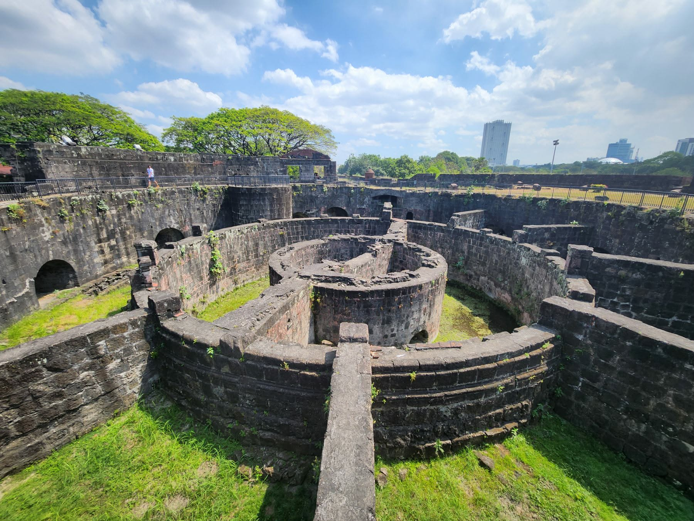
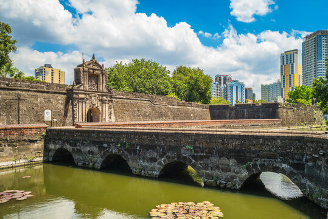

1. Binondo Bridge
Location: Binondo, Manila
A peaceful spot to slow down, enjoy the view, and take a quiet break from a busy day.

Read More
A guide to peaceful places where you can pause, relax, and enjoy your free time.
Location: Binondo, Manila
A peaceful spot to slow down, enjoy the view, and take a quiet break from a busy day.
Location: Intramuros, Manila
A historic place where you can walk around, appreciate the surroundings, and spend some time reflecting.

Location: Intramuros, Manila
A quiet historic destination where you can take a break, explore, and enjoy a slower pace.
